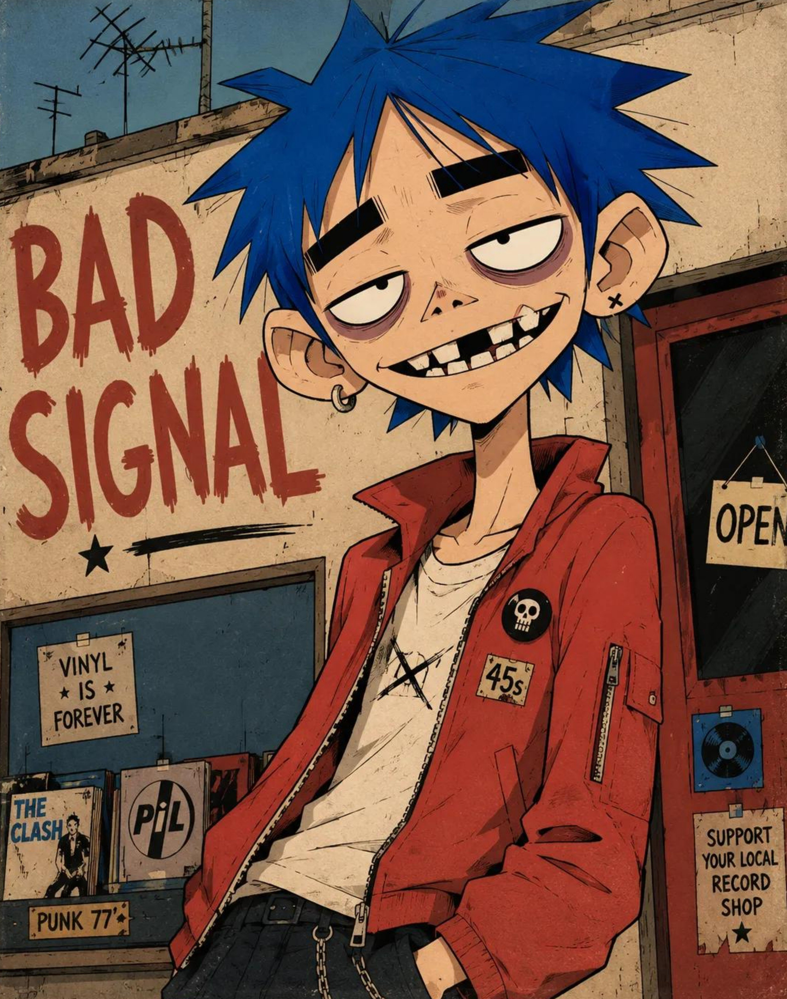

X｜Taaruk：GPT Image 2「alternative character illustration」長提示詞

Taaruk（@Taaruk_）在 X 分享一段 GPT Image 2 on ChatGPT 的長提示詞，用來生成「two-dimensional alternative character illustration」。它不是一般一句話 prompt，而是把角色比例、五官、線條、材質、配色、背景、字體與輸出比例全部明確化。
示例圖視覺描述
四張圖都呈現類另類漫畫 / 龐克海報感：粗黑外輪廓、平面色塊、紙張磨損、少量刮痕、背景大字與印刷錯位。
- 第一張：藍髮角色穿紅外套，背景有唱片店與「BAD SIGNAL」「VINYL IS FOREVER」等字樣，角色只露出半身與臉部，構圖偏右。
- 第二張：灰髮角色戴方框眼鏡，粉紅背景上有「PERMANENT VACATION」，下方有滑板與海岸/遊樂區元素。
- 第三張：橘髮角色與鼓組/籃球場背景，牆面可見「MAKE NOISE」「ALL DAY」「NO RULES」「BEAT FIRST」等字樣。
- 第四張保存但未逐張詳述；整體仍是同一套大頭、厚眉、誇張牙齒與粗糙印刷質感。
Prompt 結構
這段提示詞可拆成 7 個可重用模組：
- 角色占比與鏡頭：角色約佔畫面 75%，off-center waist-up composition，slight camera tilt。
- 可替換槽位：`[CHARACTER]`、`[POSE]`、`[HAIR]`、`[EXPRESSION]`、`[CLOTHING]`、`[COLORS]`、`[BACKGROUND]`、`[TEXT]`。
- 臉部比例：oversized rounded cranium、short flattened lower face、narrow jaw、long thin neck。
- 五官語彙：huge pale oval eyes、off-center pupils、thick horizontal black eyebrows、heavy upper eyelids、under-eye rings、triangular nose、asymmetrical grin、irregular teeth。
- 線條與材質：thick outer silhouettes、medium facial lines、thin angular hair strands、scratch marks、subtle ink wobble。
- 上色方式：flat opaque color fields、one hard-edged cel-shadow shape per form、controlled palette。
- 海報背景：large flat shapes、loose environmental details、rough hand-painted lettering、cropped typography、weathered printed edges。
官方來源查核與限制
OpenAI 的 image generation 文件確認 `gpt-image-1` 與後續模型支援從文字生成圖片與編輯圖片。不過官方文件也明確列出限制：
- Text rendering 雖然改善，仍可能在精確文字位置與清晰度上失敗。
- Consistency 雖可改善一致性，但 recurring characters 或 brand elements 仍可能漂移。
- Composition control 仍可能無法完全遵照精細版面要求。
因此，Taaruk 的 prompt 適合做「風格語彙模板」與「角色插畫 brief」，但不該被解讀成能穩定產出可商用角色 IP 的完整流程。
實務提醒
- 如果 `[CHARACTER]` 是既有名人、品牌角色、動畫角色或遊戲角色，要先處理肖像權與 IP 授權。
- 圖中的粗體英文標語看似有風格，但仍要逐字檢查；AI 圖像常出現拼字、排版與局部字母錯誤。
- 若要做系列角色，應另外建立 reference sheet / style sheet，而不是只靠單一長 prompt。
- 商用前需檢查平台政策、資料來源、訓練/參考素材與輸出授權。